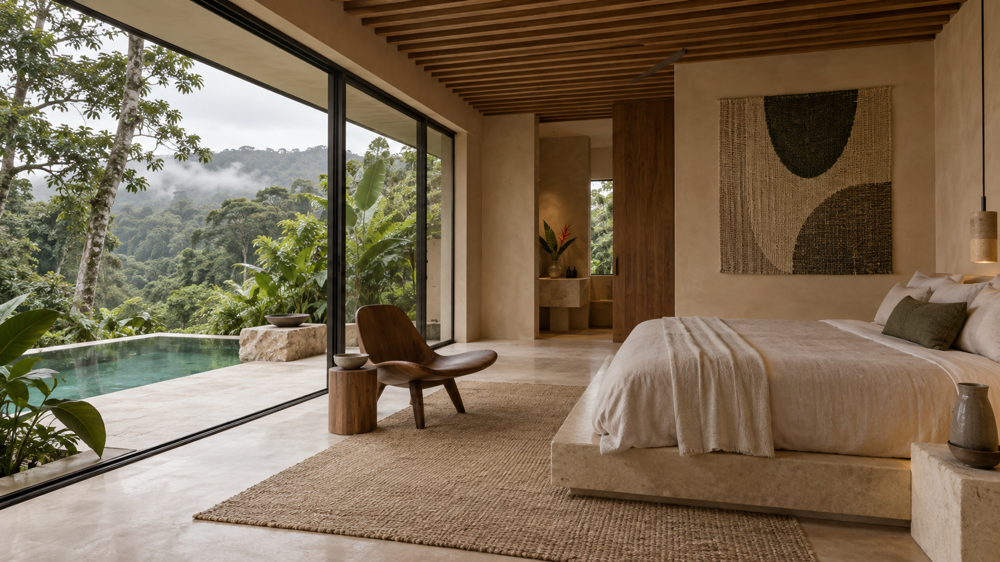

THE VILLAS
Space to be.
Time to simply stay.
Wake to the sounds of the forest. Swim with nothing but green on the horizon. A private pool, a quiet terrace, and the kind of comfort that asks nothing of you.

01 / 03A STAY TO CALL YOUR OWN
The Forest
Suite
An intimate hideaway at the edge of the canopy. Unhurried mornings in the water, afternoons on your terrace, and a bedroom that opens to the green beyond.

THE PLEASURE OF TAKING YOUR TIME
A slower morning.
A richer day.
DURING YOUR STAY
A little guidance.
Whenever you need it.
From your first morning coffee to a journey beyond the resort, your companion is here to help with the little details.